OLAS Di Tella
Universidad Torcuato Di Tella · Octubre de 2026
Una identidad para la agrupación estudiantil OLAS y su campaña «Tu voz transforma». La O se convierte en una ola y organiza el sistema de marca, afiches y stickers.
Paleta
Verde, menta, azul profundo y blanco presentes en las piezas de la identidad.
Colores presentes en las piezas de identidad.
- Verde #4C997F
- Menta #9FDDBD
- Azul profundo #175055
- Blanco #FBFDFD
Marca
De propuestas literales y tonos amarillos a verdes y azules. La O se convierte en una ola que señala hacia adelante.



Iconografía
El símbolo y los elementos que construyen la ola.


Afiches
Cinco piezas para anunciar la agrupación y el inicio de la precampaña.
Stickers
La ola y la flecha, reunidas en una aplicación circular.